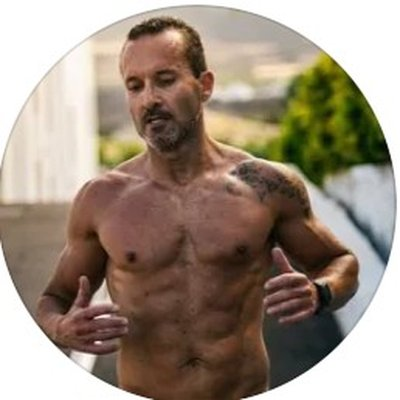
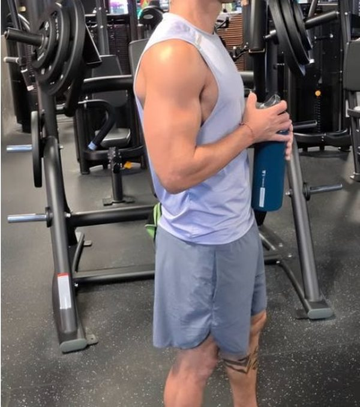

Arrancar sin sufrir
Hábitos que duran, fuerza básica bien hecha y la primera grasa fuera. Sin hambre.

Con 1,69 m llegué a casi 80 kg y una barriga que me acomplejaba con la ropa. Hoy tengo más músculo, más fuerza y sigo jugando al fútbol con mis amigos. Te ayudo a conseguirlo con fuerza, comida que aprendes a organizar y sin sufrir.
El formulario son 2 minutos. Lo leo yo y te digo por dónde empezaría en tu caso.
No es tu edad ni tu fuerza de voluntad. Te falta un plan que no te haga sufrir.

"No llegas tarde: estás en el momento perfecto para tu cambio."
Hice deporte desde los 6 años: fútbol, balonmano. Pensaba que estando delgado no necesitaba un gimnasio. Con los años me fui dejando, comida basura, pedidos los fines de semana, y acabé comprándome ropa cada vez más suelta.
Empecé en un parque con mi mejor amigo y luego cometí todos los errores: pasar hambre, entrenar sin rutina, quitar hidratos por la noche, el cardio antes de las pesas. Pasé también una etapa muy dura, y el gimnasio fue lo que me sostuvo.
Hoy entreno fuerza de verdad, como sin pasar hambre y sigo con mi fútbol. En el gimnasio me piden consejo y mis amigos me preguntan cómo lo hago. Eso es lo que quiero para ti.
Seis meses con un orden claro. Cada semana miro cómo respondes y ajusto tu plan.
Hábitos que duran, fuerza básica bien hecha y la primera grasa fuera. Sin hambre.
Músculo y rendimiento: progresas en cargas y lo combinas con tu deporte.
Consolidas tu físico y tu energía, y aprendes a mantenerlo solo.
Me mandas tu revisión, te corrijo la técnica por vídeo y ajusto el plan. Hablas directamente conmigo.
Yo sigo jugando con mis amigos y saliendo a correr. El plan se monta alrededor de lo que te gusta hacer, para que rindas más y te lesiones menos.
Estoy abriendo mis primeras plazas. El primer caso de esta página puede ser el tuyo: te acompaño de cerca durante seis meses y, si me dejas, contamos tu cambio aquí.
Las condiciones exactas (cumplimiento y revisiones) se detallan en el contrato.
2 minutos en el formulario: cómo estás, qué has probado y qué deporte haces.
Si encajamos, te llamo y te digo por dónde empezaría contigo.
Tu fase 1 hecha para ti y la primera revisión en el calendario.
Lo leo yo personalmente. Si encajamos, te escribo para hablar.
No. Yo tengo mi mejor físico a los 43. El cuerpo responde a cualquier edad si le das fuerza, buena comida y descanso.
Por lo básico y sin agobios: pocos ejercicios bien hechos y aprender a organizar tu plato. La fase 1 está pensada para eso.
No. Lo pasé yo y no funciona. Aprendes a comer para perder grasa sin dejar de comer lo que te gusta.
Al contrario. El plan se monta alrededor de tu deporte para que rindas más y te lesiones menos.
A mí también me pasó. Te doy la rutina clara, con vídeos, para que entres sabiendo exactamente qué hacer.
El plan se ajusta a tu semana real. Es mejor poco y constante que mucho y dejarlo al mes.
Si cumples el plan y me mandas tus revisiones y en la fase 1 no ves cambios, sigo contigo gratis hasta que lleguen. Queda por escrito.
Depende de tu caso y del plan que necesites. Rellena el formulario y te lo explico cuando hablemos.
O escríbeme 40 por privado en @franfuentes.coach y te contesto yo.